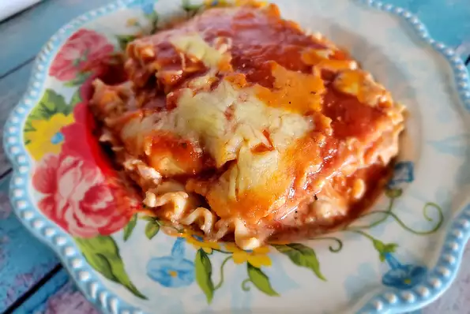

Odin's Lasagna

Description
Lasagna is a wide, flat sheet of pasta. Lasagna can refer to either the type of noodle or to the typical lasagna dish which is a dish made with several layers of lasagna sheets with sauce and other ingredients, such as meats and cheese, in between the lasagna nood
It is usually rectangular or ribbon shaped, thicker than tagliatelle, made from a dough based on flour and eggs, with numerous local variants. After being boiled, the rectangular lasagna noodles are drained and placed in layers with a filling that varies based on different local traditions.
Ingredients
- 3 each skinless, boneless chicken breast halves
- 1 (8 ounce) package lasagna noodles
- 1 tablespoon butter
- 1 medium onion, chopped
- 2 teaspoons minced garlic
- 2 (26.5 ounce) cans spaghetti sauce, divided
- ½ cup grated Parmesan cheese, divided
- 1 teaspoon Italian seasoning, or more to taste
- 1 cup shredded mozzarella cheese
- ½ cup shredded sharp Cheddar cheese
Directions
- Step 1
Preheat the oven to 350 degrees F (175 degrees C).
- Step 2
Bring a large pot of water to a boil over medium-high heat and add chicken breasts; reduce heat and let simmer until chicken falls apart easily with a fork and is no longer pink, 10 to 15 minutes. Drain water, shred chicken with 2 forks, and set aside.
- Step 3
While chicken is boiling, bring a large pot of lightly salted water to a boil. Cook lasagna noodles in the boiling water, stirring occasionally, until tender yet firm to the bite, about 8 minutes. Drain and lay noodles in a single, flat layer on a paper towel to dry.
- Step 4
Heat butter in a small saute pan over medium-high heat. Saute onion and garlic in the hot butter just until onion is translucent, 5 to 7 minutes.
- Step 5
Mix shredded chicken, onion-garlic mixture, 1 cup spaghetti sauce, ricotta cheese, 1/2 of the Parmesan cheese, and Italian seasoning together in a large bowl.
- Step 7
Bake in the preheated oven until heated through and cheese bubbles, about 45 minutes.